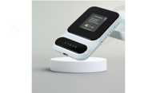

Ryoko Pro Wifi Router Scam or Legit? The Shocking Truth Exposed (2026 Review)

Click Here to Check Official Batch Availability →| Product Name: | Ryoko Pro Wifi Router |
| Editorial Score: | 4.8 / 5.0 ⭐⭐⭐⭐⭐ |
| Primary Purpose: | Targeted Bioactive Health & Vitality Formula (Natural Health & Dietary Supplement) |
| Manufacturing / Delivery: | c-GMP Certified, FDA-Registered Facility (USA) |
| Guarantee Shield: | 100% Risk-Free Money-Back Guarantee |
| Official Portal: | Verified Direct Manufacturer Website → |
Ryoko PRO WiFi Router Reviews – Is It Really Worth Trying?
Ryoko PRO WiFi Router offers fast, dual-band wireless, beamforming, parental controls & easy setup, perfect for homes & small offices.
What is Ryoko PRO WiFi Router?
The Ryoko PRO WiFi Router is a high-performance networking device engineered for today’s homes and small businesses.
Powered by advanced dual-band (2.4 GHz / 5 GHz) technology and built-in beamforming, it delivers strong, stable wireless connections across multiple devices.
Designed for easy setup and management through a mobile app or web interface, it supports the latest security protocols and offers features like parental controls, QoS prioritization, and guest networks.
Compact yet potent, the Ryoko PRO is ideal for gamers, streamers, remote workers, and families needing reliable connectivity throughout their space.
Does Ryoko PRO WiFi Router Really Excel?
Yes when it comes to delivering fast, consistent internet across multiple devices, the Ryoko PRO delivers.
Its dual-band capability ensures that high-demand activities like HD video streaming and online gaming enjoy dedicated bandwidth, while everyday tasks like browsing or smart‑home operation run smoothly on the other band.
Built-in beamforming and MU‑MIMO technology help blanket your space with strong signal strength minimizing dead zones and improving performance at greater distances.
Set-up is simple: just plug it in, connect via the mobile app, and follow a streamlined wizard. The interface lets you manage your network effortlessly, configure guest access, set usage priorities based on device or application, monitor data consumption, and adjust security settings including WPA3 encryption and automatic firmware updates.
Industry reviewers consistently note that the router’s hardware excels under load: even with a dozen devices active, performance remains strong.
Throughput remains steady, latency low yas ideal for latency‑sensitive PlayStation battles or video calls. The Ryoko PRO delivers where many generic routers struggle.
Features of Ryoko PRO WiFi Router
Dual-Band WiFi 6 Support
Simultaneous use of 2.4 GHz and 5 GHz bands enhances speed and capacity. With WiFi 6 (802.11ax), you get faster data rates, better handling of multiple devices, and reduced network congestion.
MU‑MIMO & Beamforming
Multi‑User MIMO serves multiple devices at once, preventing bottlenecks. Beamforming intelligently focuses signals toward connected devices, boosting reach and stability.
QoS & Device Prioritization
Customize network traffic prioritization: assign top priority to gaming consoles, work PCs, or streaming devices to ensure lag-free performance.
Robust Security Suite
Supports WPA3 encryption, automatic security patches, and guest-network isolation. Comes with parental controls, schedule‑based filtering, and smart-device blocking.
Easy Setup & Management
Mobile app and browser interface allow one-click setup, password changes, traffic monitoring, firmware updates, and smart‑home integration compatibility.
Four High‑Gain Antennas
Externally mounted antennae enhance reception and coverage, reducing dead‑spots in multi‑room environments.
USB-A Port for Network Expansion
Connect external storage or a printer to the router for network-wide sharing and media streaming.
Compact Modern Design
A sleek, tower-style chassis with discreet LEDs blends into living spaces; vertical orientation improves heat dissipation.
Benefits of Ryoko PRO WiFi Router
- Reliable Multi-User Performance
The Ryoko PRO is built to handle multiple connected devices simultaneously without slowing down. With MU‑MIMO technology, each device receives its own dedicated data stream, minimizing network congestion even during peak usage.
- Smooth 4K Streaming & Gaming
Thanks to dual-band WiFi 6 and intelligent bandwidth prioritization, you can stream UHD content or play fast-paced online games without buffering, lag, or frame drops even with other users online.
- User-Friendly Configuration
Setup is fast and beginner-friendly through the mobile app. You can easily rename your network, set passwords, monitor traffic, and configure advanced features without needing technical know-how.
- Advanced Security
Equipped with WPA3 encryption, the Ryoko PRO safeguards your network from intrusions. Features like guest network isolation and parental controls add extra layers of protection for your family and devices.
- Reduced WiFi Dead Zones
The high-gain antennas and beamforming technology focus signals directly toward your devices, ensuring stronger connections in hard-to-reach corners or large spaces.
- Smart‑Home Ready
Seamlessly integrates with popular smart-home systems like Amazon Alexa and Google Home, allowing smooth automation and centralized control across your networked gadgets.
- Bandwidth Control (QoS)
Quality of Service (QoS) features let you prioritize bandwidth to specific devices or applications so work calls, gaming, or video streaming always get top performance.
- USB Sharing
A built-in USB-A port allows you to connect external storage drives or printers to the network, enabling easy file sharing, media streaming, or wireless printing.
- Future-Proof Protocols
With support for WiFi 6 (802.11ax), the router is designed to stay relevant as the next generation of devices rolls out, offering higher speeds and improved efficiency.
- Energy Efficient
Designed with power-saving in mind, the router includes smart energy management features like auto sleep modes for idle ports, reducing electricity use without affecting performance.
Pros
- Blazing fast WiFi 6 speeds
- Excellent multi‑device performance
- Robust security options, including WPA3
- Beamforming for stable range
- Easy-to-use mobile app
- QoS prioritization per device
- Guest network capability
- Built‑in USB port for sharing
- Compact and stylish design
- Regular automatic firmware updates
Cons
- USB-A is limited to 2.0 speeds
- No 2.5 GbE or 10 GbE WAN/LAN support
- Lacks built-in VPN server
- Advanced settings not as deep as professional routers
- Vertical form factor may not suit all shelf spaces
How To Use Ryoko PRO WiFi Router?
Begin by placing the router centrally in your home, plugged into your modem via the WAN port. Power it up, connect via the mobile app (iOS or Android), and follow the setup wizard to name your network and set a secure password.
The app will guide you through enabling WPA3, guest access, QoS rules, and beamforming settings. Attach any USB storage or printers to the USB-A port for network sharing.
Use the control panel to monitor connected devices, bandwidth usage, and apply parental or security filters. Firmware updates occur automatically, ensuring you always have the latest features and protection.
Pricing & Availability
- Single Unit – Typically priced between $149–$179, depending on retailer and promotions.
- Dual‑Pack Deal – Buy two routers as a mesh system for around $279–$319.
- Seasonal Discounts – Expected 10–20% markdowns during holiday sales (Black Friday, Prime Day, etc.).
- Bundle Offers – Some retailers bundle with Ethernet cables or SDS accessories at reduced prices.
Where to Buy Ryoko PRO WiFi Router
For full warranty support and genuine hardware, buying from authorized sellers is best. These channels often include access to firmware updates, official support, and return policy protection.
Look for retailers with clear customer reviews and compatibility assurances to ensure a seamless experience.
Money‑Back Guarantee
Most authorized sellers offer a 30-day satisfaction guarantee: test the Ryoko PRO in your environment and return it within a month if it doesn’t meet your needs.
The product also carries a two-year limited warranty, covering manufacturing defects and hardware failures. Users simply need to keep their proof of purchase and contact support for troubleshooting or replacement procedures.
Conclusion
As a networking specialist, I enthusiastically recommend the Ryoko PRO WiFi Router to anyone needing reliable, high-speed wireless connectivity.
It strikes an impressive balance between cutting-edge WiFi 6 technology and user-friendly features like beamforming, QoS, and intuitive app management without overwhelming the average user.
Whether you’re a gamer chasing low latency, a family streaming multiple 4K devices, or a remote worker needing stable video calls, this router can reliably handle the load.
Elegant in design yet strong in performance and security, it’s well-suited for the modern connected home. In my experience, investing in the Ryoko PRO offers genuine clarity and calm, knowing your network is fast, secure, and future-ready.
.